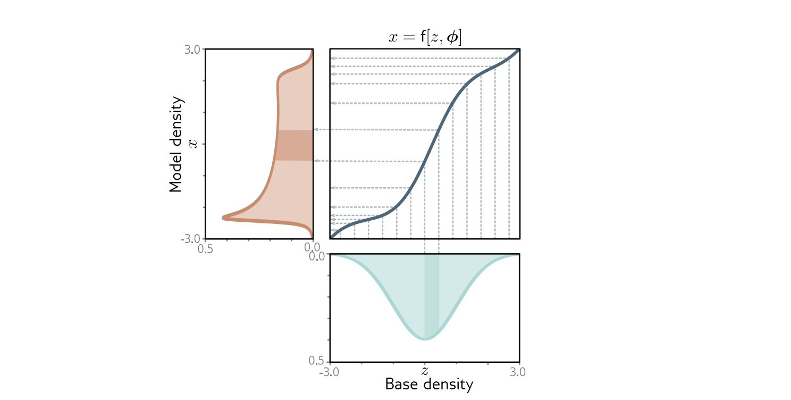
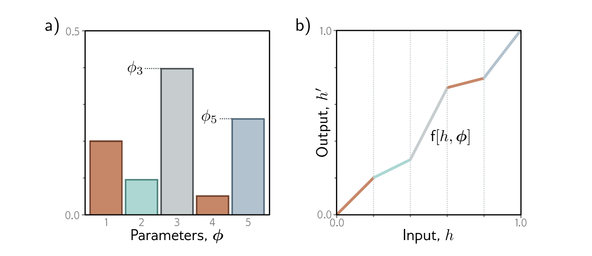
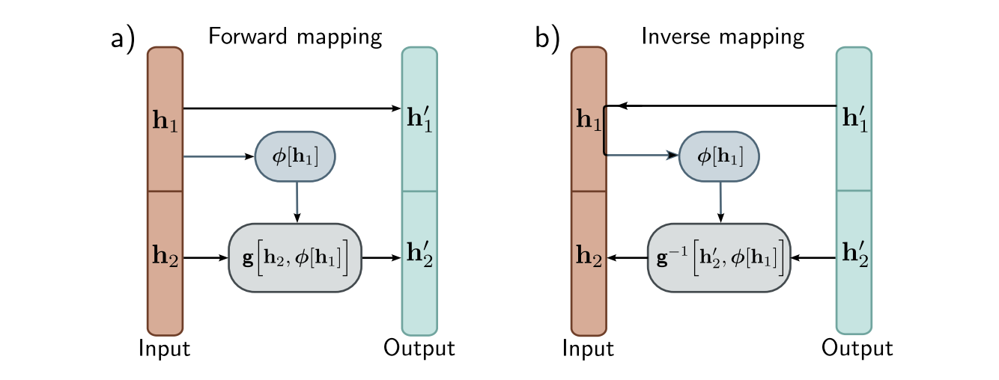
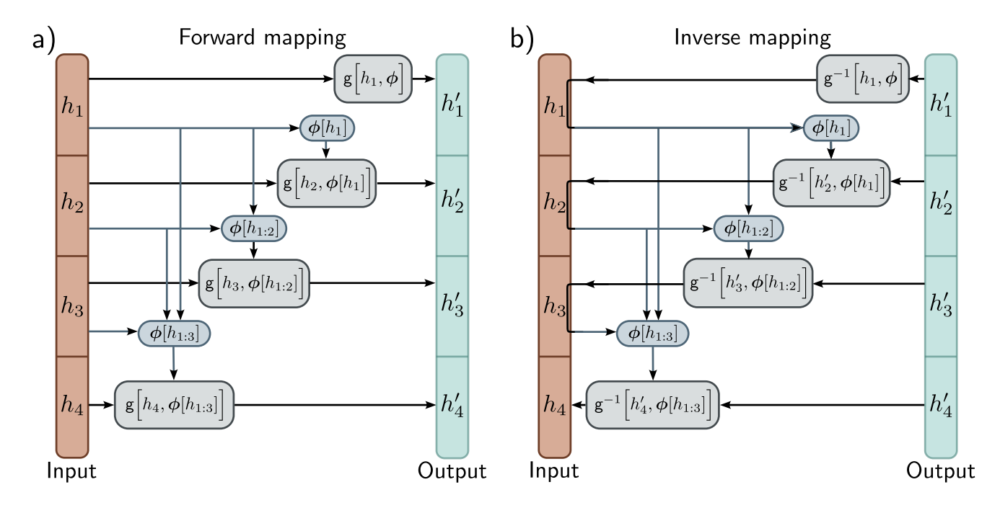
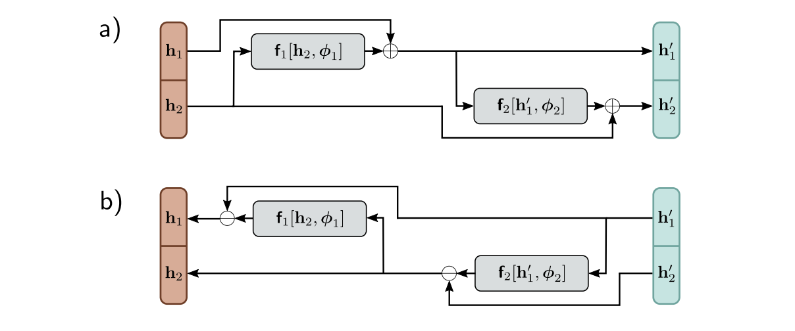
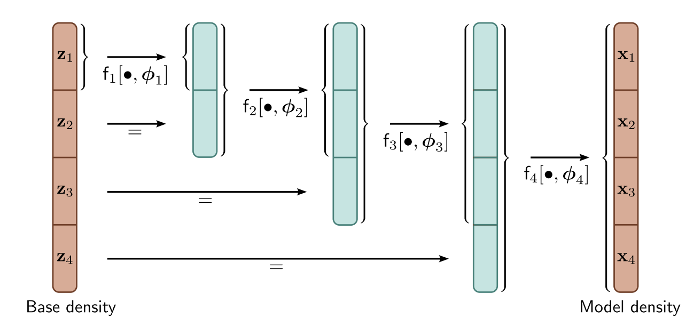
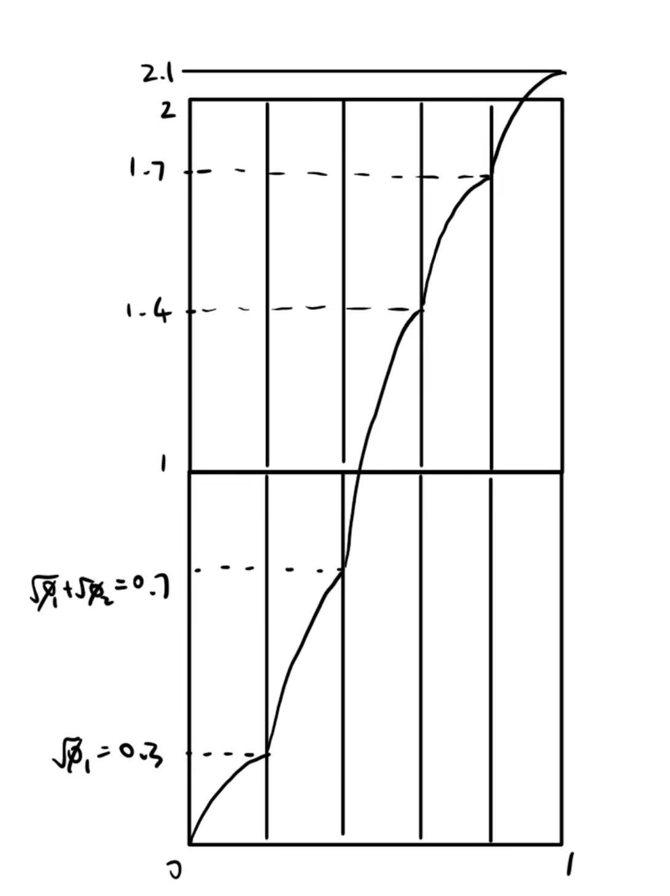

C16.Normalizing flow
normalizing flow是probabilistic generative model
1.1D example
思路 对一个基础的概率密度分布$Pr(z)$的随机变量做映射$x = f[z,\phi]$, 可以得到一个新的分布$Pr(x)$.

fact 可以观察到, 当转换函数$f[z,\phi]$越平缓, z转换为x越集中, 相应的概率密度$Pr(x)$被压缩到一起.
复习-概率论关于随机变量函数的分布的一个命题
prop 设$X$具有概率密度函数$f_X(x), x\in(-\infin, +\infin)$, 设$g(x)$处处可导且单调, 则有:
①$Y = g(X)$是连续型随机变量
②$f_Y(y)=\left\{\begin{aligned} &f_X[h(y)]\cdot |h'(y)|&,\alpha<y<\beta \\ &0&,elsewise \end{aligned}\right.$
其中, $h=g^{-1}$, $\alpha=\min[g(-\infin), g(+\infin)]$, $\beta = \max[g(-\infin), g(+\infin)]$.
注意, 这个命题包括了$g(x)$单调递减的情况, 所以结论中的$h'(y)$有绝对值.
prop 条件相同, 用本章的符号重写上述命题的结论:
符号 forward mapping $f[z, \phi]$ 被称为 generative direction, then the inverse mapping $f^{-1}[x, \phi]$ 被称为*normalizing direction*, 这是由于这一随机变量转换将复杂的概率分布$Pr(x)$变为简单的基础分布$Pr(z)$, 而且基础分布通常是normal distribution.
learning way 直接对带参数的分布$Pr(x|\phi)$做极大似然就行, 给定样本分布$\{x_i\}_{i=1}^I$:
其中, $z_i=f^{-1}(x_i, \phi)$.
2.general map
思路 将上一节的一维随机变量拓展到多维随机变量$\bold x, \bold z\in \R^D$, 使用深度网络拟合转换函数$\bold x = \bold f[\bold z, \boldsymbol \phi]$.
同理, 有一个类似的等式:
其中, 右边第一项是$D\times D$ Jacobian矩阵的行列式的倒数, 要求转换函数可逆( 相当于双射?).
mapping with deep neural network
则 Jacobian矩阵可以直接相乘:
loss func 同理, 给定样本分布$\{x_i\}_{i=1}^I$, 有:
其中, $z_i=f^{-1}(x_i, \phi)$.
Rmk 映射必须满足的几点性质 1.足够的可表达性2.双射3.逆映射计算高效4.Jacobian计算高效.
3.Invertible network layer
3.1.Linear flows
一般形式 $\bold f[\bold h]=\boldsymbol \beta+\bold \Omega \bold h, \bold \Omega\in\R^{D\times D}$, 且$\bold \Omega$可逆, 计算inverse和det Jacobian的时间复杂度均为$\mathcal O(D^3)$.
特殊矩阵 对角矩阵, 正交矩阵, 三角矩阵有更高的效率.
一般使用LU decomposition:
其中, P是置换矩阵, L是下三角矩阵, U是上三角矩阵with对角元素为0, D为对角矩阵, inverse的时间复杂度为$\mathcal O(D^2)$, $\log \det(\Omega)=\log(diag(L)+D)$
缺点 线性变换永远只能得到另一个normal distribution,即当输入的分布为$\mathcal N[\mu, \Sigma]$, 输出为$\mathcal N[\beta+\Omega\mu, \Omega\Sigma\Omega^T]$.
3.2.element wise flow
动机 映射中引入非线性
映射 对输入向量的每个元素单独做变换, 相当于广播:
其中, 函数$f$必须可逆, 直接用ReLU肯定不行.
Jacobian Jacobian矩阵必然是对角阵, 因为向量元素之间没有混合, 所以有:
注意左边是Jacobian+行列式+绝对值的意思.
invertible func 函数$f$可以是leaky ReLU (注意必须是满射), 也可以是带参数的分段映射:

带参数的分段映射比leaky ReLU有更多折线, 同时为了满足双射和段与段之间首尾相连, 有更复杂的表达式:
其中, K为分段数量, b为当前位于第几个区间, $b=⌊Kh⌋ + 1$, 权值$\phi$相加为1.
inverse 这样分段双射函数的逆映射易得.
3.3.Coupling flows
动机 通过组合elementwise flow得到更复杂的非线性映射.
映射 将输入向量分为两个部分$\bold h=[\bold h_1^T, \bold h_2^T]^T$, 对第一个部分$\bold h_1$做恒等变换, 第二个部分$\bold h_2$做elementwise映射 whose 参数由第一个部分决定.
可以由下图表示:

$\phi[x]$是elementwise函数$g(., \phi)$的参数, $\phi[x]$不需要可逆, 可以是一个神经网络.
jacobian和inverse同上节是简单的.
优化-随机性 一般在输入前增加一个随机置换, 对于图像输入, 分割和置换的单位是channel.
3.4.Auto-regressive flows
动机 coupling flow的多分割升级

映射 每一次elementwise映射都要使用之前的输入:
其中, 函数$g[•,•]$被称为 transformer(和transformer layer撞名了), 函数$g$的参数$\phi[]$被称为conditioner. 当transformer和conditioner都足够的灵活, auto regressive flow就是universal approximator.
forward map可以并行计算, 可以将后续片段添加mask实现, 但inverse map只能顺序计算, 因为每次计算$\bold h_i$都要依赖前面的值$\bold h_{1:i-1}$, 而前面的值也要通过inverse map得到.
3.5.Inverse auto regressive flow(omitted)
auto regressive flow的生成方向计算快, 似然方向计算慢. 可以将auto regressive flow直接反过来, 得到一个生成方向计算慢, 似然方向计算快的flow.
通过合适的方法结合这两种flow可以得到更高的效率.
3.6.Residual flow: iRevNet
让每个transformer的输出加上输入:

注意 这两个映射不是对称的, 可以想象如果两个映射完全对称, 就无法inverse map了.
inverse map如下:
这个inverse map与前几节的很不一样, 不需要用到$f_1^{-1}, f_2^{-1}$, 只需要改成减法, 所以函数$f$不需要可逆.
不可逆的$f$会造成Jacobian矩阵计算困难.
3.7.Residual flow and contraction map
Thm (Banach fixed point) every contraction mapping has a fixed point.
def contraction mapping $f[•]$ has the property:
其中, dist是距离函数, $\beta\in(0,1)$.
Rmk 其实很好理解: 在函数图像上画出直线$y=x$, 交点处就是不动点. 想象循环将输出值代入到输入值当中:
得到的数列$\{z_0, f[z_0], f[f[z_0]],\dots\}$相邻两项之差会越来越小, 当相邻两项相等时就可以得到不动点.
Residual apply 考虑一个residual:
其中, $f$是一个contraction函数, 则给定$y$求$x$, 即求函数的逆可以变得很简单:
可以轻易证明$g[x]$仍然是一个contraction函数, 则原来的问题变成了求另一个contraction函数的不动点:
make a contraction function 要使函数$f[x, \phi]$是一个contraction函数, 相当于其Lipschitz 常数必须小于1, 相当于任意位置的斜率小于1, 相当于函数的权值矩阵$\bold \Omega$最大的eigenvalue小于1, 这样的矩阵可以通过一个粗鲁的办法得到: 将矩阵内所有绝对值大于1的剪掉.
compute Jacobian 计算输出$y$的导数的log值可以化简计算:
上述第一步使用了$\log \left[|A|\right] = \tr[\log \left[A\right]]$, 第二步是Taylor 展开, 但trace依然很难计算, 可以通过Hutchinson’s trace estimator进行估计:
则:
4.Multi-scale flows
虽然输入$z$和输出x的维度必须一样, 我们可以通过如下方法降低计算量:

5.application
5.1.modeling densities
毫无疑问可以得出新样本的似然
5.2.synthesis
缺点 normalize flow生成的图像质量一直不如GAN或者diffusion, 可能是可逆函数的表达能力问题, 也可能是研究深度不够
5.3.approximating other density models
normalize flow 可以用于近似其他不好采样的分布.
设$Pr(x|\phi)$是student, $q(x)$是teacher, 我们根据初始分布的采样得到一些$\bold z_i$, 然后$\bold x_i=f[\bold z_i,\phi]$, 再计算极大似然, 再KL- divergence
§Problems
Problem16.2
Consider transforming a standard normal distribution:
with the function:
Find an expression for the transformed distribution $P r(x)$.
Solution 首先, 这是一个$(-\infin, +\infin) \rightarrow (0,1)$的单调增映射, 立得:
Problem16.3
Write expressions for the Jacobian of the inverse mapping $\bold z = f^{−1} [\bold x, \bold ϕ]$ and the absolute determinant of that Jacobian in forms similar to equations 16.6 and 16.7.
Solution
Problem16.6
Prove that if $x = f[z] = Az + b$ and $P r(z) = Norm_z[µ, Σ]$, then $P r(x) = Norm_x[Aµ + b, AΣA^T ]$ using the relation:
Proof
$\blacksquare$
Problem16.9
Consider constructing an element-wise flow based on a conical combination of square root functions in equally spaced bins:
where $b = ⌊Kh⌋ + 1$ is the bin that $h$ falls into, and the parameters $ϕ_k$ are positive, and sum to one. Consider the case where $K = 5$ and $ϕ_1 = 0.1$, $ϕ_2 = 0.2$, $ϕ_3 = 0.5$, $ϕ_4 = 0.1$, $ϕ_5 = 0.1$. Draw the function $f[h, ϕ]$. Draw the inverse function $f^{−1} [h ' , ϕ]$.
Solution $\sum \sqrt{\phi_k}\approx 2.1$, 加起来不等于1, 怎么办:

problem16.11
Write out the expression for the KL divergence in equation 16.25. Why does it not matter if we can only evaluate the probability $q(x)$ up to a scaling factor $κ$? Does the network have to be invertible to minimize this loss function? Explain your reasoning.
Solution trivial